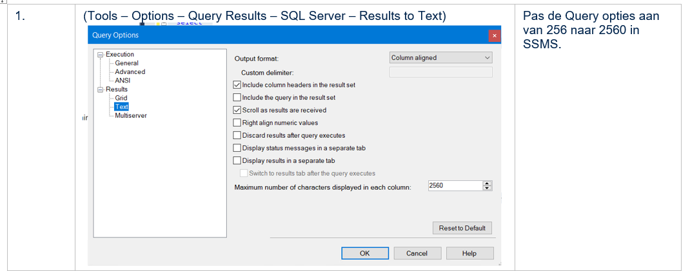
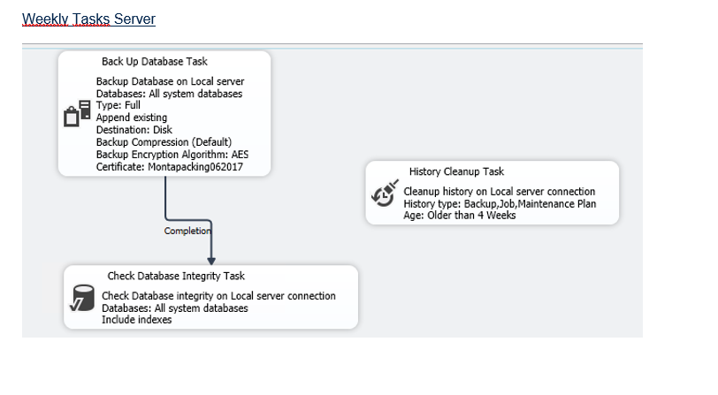

SQL Backup en Restore
Inhoudsopgave
2. Restore server gereed maken
2.2 Voorbereiden Restore server
2.2.1 Certificaat installeren op Restore-server
2.2.2 Configureren database mail
2.2.3 Settings op server level goed zetten
2.2.4 Kopiëren van de logins op de bron(!) server
2.2.5 Voorbeeld creëren logins
2.2.8 Server triggers maken (nodrop)
2.2.10 Maintenance plannen aanmaken
Opmerkingen over deze handleiding
In deze handleiding staan grote stukken code, die gekopieerd moeten worden. Omdat dit erg lastig in Montadocs is aan te maken, dient hiervoor het Word-document gebruikt te worden wat staat in "
Voorbereidingen
Nieuwe server
Als eerste moet er een nieuwe Virtuele machine worden geïnstalleerd met de volgende specificaties. (Uitgangspunt MP-SQL10 per 28-5-2021)
Windows Server 2019 Datacenter
16 vCPUs
140 GB Memory
Disks
C:\ OS 100GB
D:\ MDF 850 GB
E:\ LDF 100 GB
F:\ BACKUP 1,22 TB
MS SQL versie 2019
Maak dezelfde instance aan als op de bronserver. (Dus BACKEND)
Met SQL Configuration manager accounts waaronder SQL-services draaien goedzetten
(L E T O P , doe dit niet via services):SQL Server : rs.sqlclust
SQL Server Agent : rs.sqlclust
MP-SQLBAK
Er is medio 2021 een restore server gereed gemaakt volgens onderstaande procedure. Dit is de MP-SQLBAK die dus meteen te gebruiken is voor een restore.
Certificaat installeren
De database backup is ge-encrypt. Dat betekent dat op de doel server dit ook moet worden ingeregeld.
Als eerste wordt hieronder beschreven hoe op de bron server een encrypted backup kan worden gemaakt en hoe het certificaat kan worden geback-upt. Voorwaarde is dat de Master-key en het certificaat Montapacking062017 op de bron server aanwezig is. Er wordt ook een backup van de masterkey gemaakt.
In Passwordstate zijn de wachtwoorden 1,3 en 4 opgeslagen.
Om bij een calamiteit een restore te kunnen uitvoeren moeten de beide files en het wachtwoord beschikbaar zijn:
Montapacking062017.cer
Montapacking062017.pvk
Wachtwoord <wachtwoord1>
Restore server gereed maken
Bij een calamiteit waarbij de restoreserver moet worden ingezet, moeten de volgende stappen gebeuren. Een aantal van deze stappen zijn vooraf al uit te voeren en dan met name de configuratie van de server. Die wordt beschreven vanaf paragraaf 2.2.
Restoren database
Kopieer de bak-file en de transactielog-backups naar een filelocatie
opde MP-SQLBAK.
Kies voor Restore database.
Geef bij device het pad op naar de bestandslocatie van de bak-file.
Kies bij options voor "Restore with norecovery"
De database verschijnt nu in restoring mode.
Kies vervolgens voor een restore van Transaction Log.
Je kunt transactielogs één voor één restoren.
Selecteer via "From Device" de eerste transactielogfile die direct na de
bak-file gemaakt is.
Kies bij options voor "Norecovery" tot bij de laatste transactielog,
kies dan pas voor "With recovery".
Voorbereiden Restore server
Om de nieuwe server voor te bereiden moeten de volgende stappen worden ondernomen:
Certificaat installeren op Restore-server
Transparent Data Encryption (TDE) werkt schematisch als volgt:

De databases zijn echter niet ecncrypted. Het database encryptie
certificaat wordt alleen gebruikt bij het maken van de backup:

Creëer masterkey indien nog niet aanwezig
create master key encryption by password = 'wachtwoord3';
Of deze er is, is te zien met de query (de naam moet "MS_DatabaseMasterKey" luiden):
select * from master.sys.symmetric_keys;

Creëren van kopie certificaat vanuit de backup files
Kopieer de files van de bronserver naar de doelserver
Montapacking062017.cer
Montapacking062017.pvk
create certificate Montapacking062017
from file = '<path>\Montapacking062017.cer'
with private key (file = '<path>\Montapacking062017.pvk'
, decryption by password = 'wachtwoord1')
Of het certificaat er daadwerkelijk is te zien met de query:
select * from sys.certificates

Configureren database mail
Settings op server level goed zetten
Kopiëren van de logins op de bron(!) server
Een server waarvan voorzien wordt dat er een restore van de monta_backend database op kan gaan plaatsvinden, kan worden voorbereid op het overnemen van de operationele rol door alvast de server level security te installeren. Dat kan als volgt.
Door de onderstaande code uit te voeren op de bronserver worden statements gegenereerd die kunnen uitgevoerd worden op een andere server. Voor het uitvoeren van die gegenereerd statements dienen ze eerst zorgvuldig gecheckt te worden, of het echt de bedoeling is de wijzigingen op de server aan te brengen. Zeker als het geen clean install is.
In 2.2.5 staat een voorbeeld van de output uit onderrstaande query. Dit handelt echter niet alles af. Onder andere de logins op basis van een certificaat of asymmetric key ontbreken. Ook worden niet alle permissies in detail gescript.

Voorbeeld creëren logins
Operators aanmaken

+-
Linked server koppelen
Server triggers maken (nodrop)
Alerts instellen


Maintenance plannen aanmaken

Jobs aanmaken
Als laatste moeten de Jobs worden aangemaakt op de Restore. Ook hier geldt weer dat de instellingen van de Bron server moeten worden overgenomen.
BELANGRIJK!
Als er een Job op de Bron server enabled is, moet die op de Restore server op [DISABLED]{.underline} worden gezet. Gebeurt dat niet dan loopt de support mailbox vol.
+------+---------------------------------------------+----------------+

Open SQL Server agent (die service had je gestart toch?) - Jobs Klik rechts en maak een nieuwe Job aan.
 Geef de Job dezelfde naam als op de Bron server.
In principe is het SA account altijd de owner van een Job.
Maar ook hier is de Bron server weer leidend.
Geef de Job dezelfde naam als op de Bron server.
In principe is het SA account altijd de owner van een Job.
Maar ook hier is de Bron server weer leidend.
 Stel nu vervolgens de verschillende Stepts, Schedules, Notifications in.
E.e.a. exact hetzelfde als op de Bron server.
LET OP. Zoals eerder aangegeven: De jobs staan op DISABLED.
Stel nu vervolgens de verschillende Stepts, Schedules, Notifications in.
E.e.a. exact hetzelfde als op de Bron server.
LET OP. Zoals eerder aangegeven: De jobs staan op DISABLED.
Naam Schedule Notification
Baseline waits nvt nvt
daily_tasks.Subplan_1 Dagelijks Email naar support when the 01:00 AM job completes
Write Application event log when the job failes
Indexeren Montaportal is Elk uur Email naar support when the gestopt job completes
Write Application event log when the job failes
log memory counters nvt nvt
log PLE nvt nvt
logbackups.Subplan_1 Elk kwartier Email naar support when the job failes
Write Application event log when the job failes
Replicatie error tussen SQL10 Elk kwartier Email naar support when the en SQL20, NEEM METEEN ACTIE job failes !!!!!!
Start Optimize Catalog Zondag 04:30 Email naar support when the Population on job completes Monta_Backend.FT_MontaPacking
Write Application event log when the job failes
syspolicy_purge_history Dagelijks Email naar support when the 02:00 AM job failes
test_notify nvt Email naar support when the job failes
Weekly Tasks Server.Subplan_1 Zondag 10:00 Email naar support when the job failes
weekly_tasks.Subplan_1 Zondag 11:00 Email naar support when the job completes
Write Application event log when the job failes
Baseline waits
-- sql agent job, start every 15 minutes (with endless loop en waiting
15 min tends to shift out of exact quarter of an hour)
-- check for server restart after last log
declare @sql_server_start_time datetime = (select sqlserver_start_time
from sys.dm_os_sys_info)
declare @max_log_date datetime = (select max(dt) from baseline.waits)
-- if so archive the baseline.waits table and create a new one
if @sql_server_start_time > @max_log_date
begin
declare @nwname varchar(100) =
'baseline.waits_'+replace(replace(convert(char(16), @max_log_date,
126),'-',''),':', '')
exec sp_rename 'baseline.waits', @nwname, 'object'
create table baseline.waits
(dt smalldatetime not null,
wait_type nvarchar(60) not null,
waiting_tasks_count bigint not null,
wait_time_ms bigint not null,
max_wait_time_ms bigint not null,
signal_wait_time_ms bigint not null,
resource_wait_time_ms as wait_time_ms - signal_wait_time_ms,
yy as datepart(yy, dt),
mm as datepart(mm, dt),
dd as datepart(dd, dt),
dw as datepart(dw, dt),
hr as datepart(hh, dt),
mi as datepart(mi, dt)
,primary key (dt, wait_type))
end
-- insert
insert baseline.waits (dt, wait_type, waiting_tasks_count, wait_time_ms,
max_wait_time_ms, signal_wait_time_ms)
select getdate(), *
from sys.dm_os_wait_stats
where wait_type not in (select wait_type from baseline.IgnorableWaits)
and waiting_tasks_count > 0
go
Daily_tasks.Subplan_1


Indexeren Montaportal is gestopt
USE Monta_Backend
DECLARE @count INT
DECLARE @counttwee INT
DECLARE @Resultaat VARCHAR(MAX)
DECLARE @Finalresultaat VARCHAR(MAX)
DECLARE @CatalogName VARCHAR(MAX)
SET @count = 1
SET @counttwee = 0
SET @CatalogName = 'FT_Montapacking'
SET @FinalResultaat = 0
WHILE @count<= 60
BEGIN
WAITFOR DELAY '00:00:01'
SET @Resultaat = (SELECT
FULLTEXTCATALOGPROPERTY(@CatalogName,\'PopulateCompletionAge') as Date
FROM sys.fulltext_catalogs)
Print @Resultaat
IF @Resultaat = 0
BEGIN
SET @FinalResultaat = @FinalResultaat + 1
END
Set @count = @Count + 1
END
Print @Finalresultaat
If @Finalresultaat < 60
BEGIN Print 'Index OK'
END
ELSE
BEGIN Print 'Index niet OK!'
raiserror('Indexeren Montaportal is gestopt!', 16, 1)
END
log memory counters
-- uitgebreide memory log
insert dbo.memory_log (counter_name, instance_name, cntr_value)
select counter_name, instance_name, cntr_value
from sys.dm_os_performance_counters
where counter_name in
('Database Cache Memory (KB)',
'Free Memory (KB)',
'Lock Memory (KB)',
'Log Pool Memory (KB)',
'Granted Workspace Memory (KB)',
'Memory Grants Pending',
'Memory Grants Outstanding',
'Optimizer Memory (KB)',
'Stolen Server Memory (KB)',
'Target Server Memory (KB)',
'Total Server Memory (KB)',
'SQL Cache Memory (KB)',
'Page life expectancy',
'Buffer cache hit ratio',
'Buffer cache hit ratio base',
'Database pages',
'Target pages',
'Extension allocated pages',
'Free list stalls/sec',
'Page lookups/sec',
'Page reads/sec',
'Readahead pages/sec',
'Page writes/sec',
'Checkpoint pages/sec',
'Background writer pages/sec')
Log PLE
insert master.dbo.PLE (dt, ple)
select getdate(), cntr_value
from sys.dm_os_performance_counters
where counter_name = 'Page life expectancy'
and instance_name = ''
/*
-- uitgebreide memory log
insert dbo.memory_log (counter_name, instance_name, cntr_value)
select counter_name, instance_name, cntr_value
from sys.dm_os_performance_counters
where counter_name in
('Database Cache Memory (KB)',
'Free Memory (KB)',
'Lock Memory (KB)',
'Log Pool Memory (KB)',
'Granted Workspace Memory (KB)',
'Memory Grants Pending',
'Memory Grants Outstanding',
'Optimizer Memory (KB)',
'Stolen Server Memory (KB)',
'Target Server Memory (KB)',
'Total Server Memory (KB)',
'SQL Cache Memory (KB)',
'Page life expectancy',
'Buffer cache hit ratio',
'Database pages',
'Target pages',
'Extension allocated pages',
'Free list stalls/sec',
'Page lookups/sec',
'Page reads/sec',
'Page writes/sec', 'Readahead pages/sec')
*/
logbackups.Subplan_1


Replicatie error tussen SQL10 en SQL20, NEEM METEEN ACTIE !!!!!!
declare @val nvarchar(100)
select @val= RS.connected_state_desc
from sys.availability_groups AG
join sys.dm_hadr_availability_replica_states RS on AG.group_id =
RS.group_id
join sys.availability_replicas AR on RS.replica_id = AR.replica_id
where AG.name = 'Monta_Backend' and AR.replica_server_name =
'MP-SQL10\BACKEND'
if @val <> 'CONNECTED'
raiserror('connected_state_desc Monta_Backend replica_server_name MP-SQL10\BACKEND <> connected', 16, 1)
select @val= RS.connected_state_desc from sys.availability_groups AG
join sys.dm_hadr_availability_replica_states RS on AG.group_id =
RS.group_id
join sys.availability_replicas AR on RS.replica_id = AR.replica_id
where AG.name = 'Monta_Backend' and AR.replica_server_name =
'MP-SQL20\BACKEND'
if @val <> 'CONNECTED'
raiserror('connected_state_desc Monta_Backend replica_server_name MP-SQL20\BACKEND <> connected', 16, 1)
select @val= RS.synchronization_health_desc from
sys.availability_groups AG
join sys.dm_hadr_availability_replica_states RS on AG.group_id =
RS.group_id
join sys.availability_replicas AR on RS.replica_id = AR.replica_id
where AG.name = 'Monta_Backend' and AR.replica_server_name =
'MP-SQL10\BACKEND'
if @val <> 'HEALTHY'
raiserror('synchronization_health_desc Monta_Backend replica_server_name MP-SQL10\BACKEND <> healthy', 16, 1)
select @val= RS.synchronization_health_desc from
sys.availability_groups AG
join sys.dm_hadr_availability_replica_states RS on AG.group_id =
RS.group_id
join sys.availability_replicas AR on RS.replica_id = AR.replica_id
where AG.name = 'Monta_Backend' and AR.replica_server_name =
'MP-SQL20\BACKEND'
if @val <> 'HEALTHY'
raiserror('synchronization_health_desc Monta_Backend replica_server_name MP-SQL20\BACKEND <> healthy', 16, 1)
Start Optimize Catalog Population on Monta_Backend.FT_MontaPacking
USE [Monta_Backend]
ALTER FULLTEXT CATALOG [FT_MontaPacking] REORGANIZE
syspolicy_purge_history

####### Verify that automation is enabled.
IF (msdb.dbo.fn_syspolicy_is_automation_enabled() != 1)
BEGIN
RAISERROR(34022, 16, 1)
END
####### Purge history.
EXEC msdb.dbo.sp_syspolicy_purge_history
####### Erase Phantom System Health Records.
if ('$(ESCAPE_SQUOTE(INST))' -eq 'MSSQLSERVER') {$a =
'\DEFAULT'} ELSE {$a = ''};
(Get-Item
SQLSERVER:\SQLPolicy\$(ESCAPE_NONE(SRVR))$a).EraseSystemHealthPhantomRecords()
test_notify
raiserror ('test', 16, 1)
Weekly Tasks Server.Subplan_1


weekly_tasks.Subplan_1